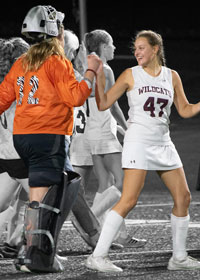
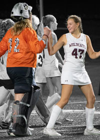

Drew Hartman's Photo Project
.jpg) 

Upon completing this project I learned a lot on how to use Photoshop and learned more about InDesign as well. To create my portfolio for this assignment I picked 8 pictures from my camera roll that I thought I could edit or make better for this assignment. I then narrowed it down to 4. For these 4 pictures I decided I wanted to change the format of the picture for some. For others I wanted to change some of the colors and add filters to them. In my favorite picture I pulled me and my best friend to the front of the image by making the background all black and white. I also cropped our 2 players so they did not take away from the 2 main people in the image. This image can be found to the left, the top picture is the original and the bottom is the edited photo. Once all my photos were edited I transferred them to InDesign where I put them in a portfolio and added captions that are more descriptive of what I changed in each image. You can also find more of the photos I edited when you click the link to the left.
©2024 Drew Hartman